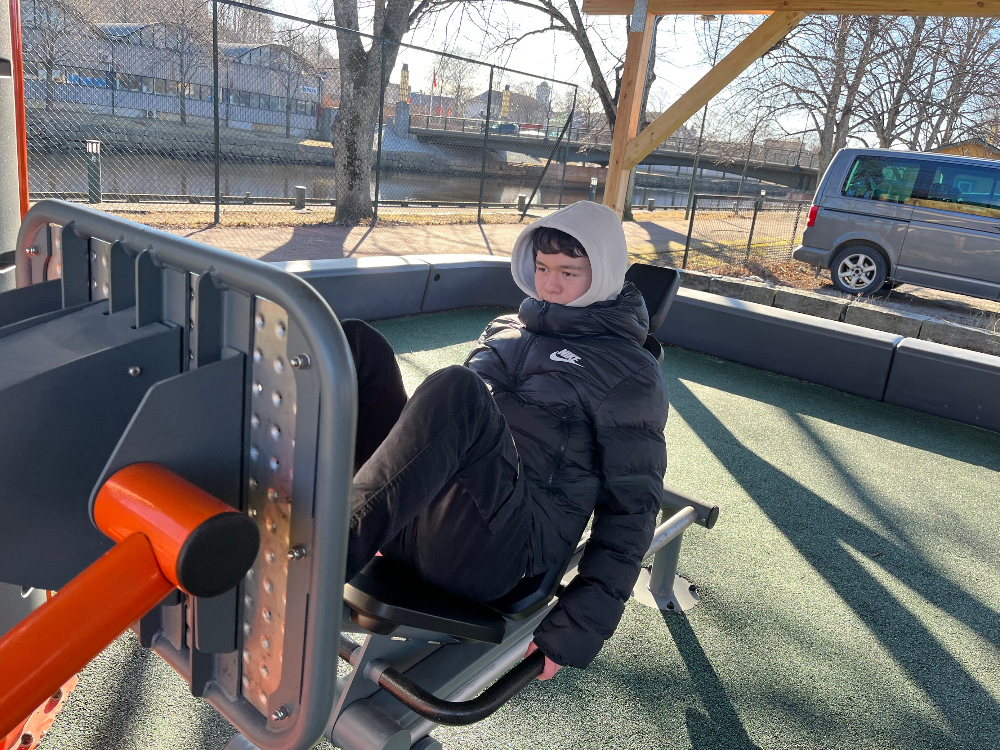
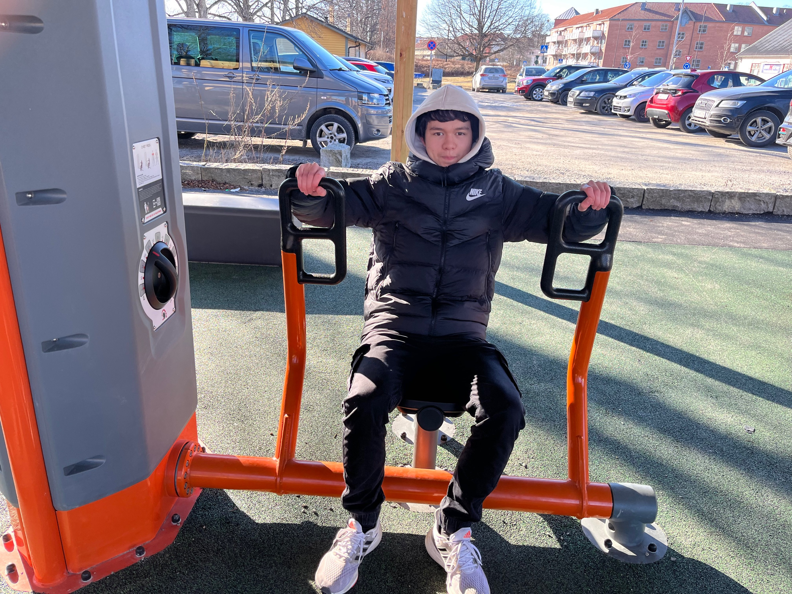
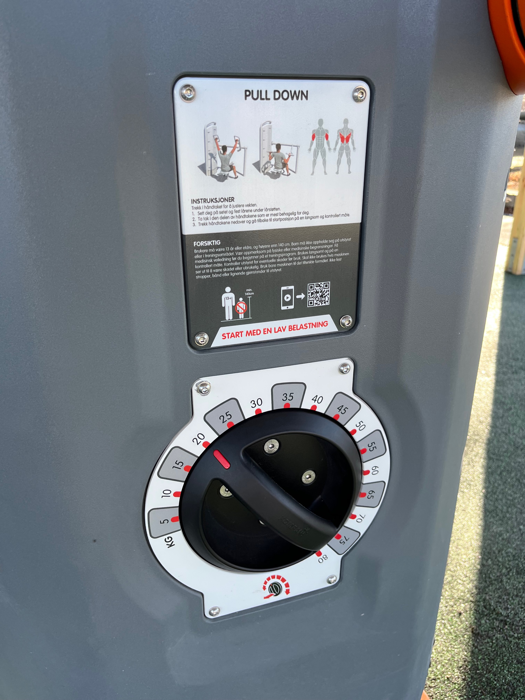

Øvelser og Hvordan de fungerer.

LEG PRESS
LEG PRESS utvikler og styrker flere muskler, som lårtriceps, hamstring og leggmuskler. Siden leggmusklene spiller en kritisk rolle
i å støtte disse musklene, blir leggmusklene også sterkere.
FORSIKTIG
Brukere må veere 13 år eller eldre, og hoyere enn 140 cm. Barn md ike oppholde seg på ustyret.
eller i treningsomerådet. Vær Oppmerksom på fysiske eller medisinske begrensigner. Få medisinst veiledning før du begynner på et treningsprogram.
Brukes langsomt og på en kontrolert måte.
Kontroller utstyret for eventuelle skader før bruk.
Skal ike brukes his maskinen ser util dv være skadet eller ubrukelig.
Bruk bare maskinen til det tiltenkte fområlet. ikke fest stropper, bånd eller lingende gjenstander til utstyret.
START MED EN LAV BELASTNING

CHEST PRESS
CHEST PRESS er en veldig god og effektiv brystøvelse for å bygge overkropp muskler.
Brystpressen retter seg mot brystene, Skuldrene og bicepsene dine. en naturlig bevegelse godet for det aller meste innenfor brystet.
FORSIKTIG
Brukere må veere 13 år eller eldre, og hoyere enn 140 cm. Barn md ike oppholde seg på ustyret.
eller i treningsomerådet. Vær Oppmerksom på fysiske eller medisinske begrensigner. Få medisinst veiledning før du begynner på et treningsprogram.
Brukes langsomt og på en kontrolert måte.
Kontroller utstyret for eventuelle skader før bruk.
Skal ike brukes his maskinen ser util dv være skadet eller ubrukelig.
Bruk bare maskinen til det tiltenkte fområlet. ikke fest stropper, bånd eller lingende gjenstander til utstyret.
START MED EN LAV BELASTNING

PULL DOWN
PULL DOWN er en super øvelse for å styrke rygg muskler, som fremmer gode stillinger og ryggradsstabilitet.
god Form er grunnleggende når du utfører en lat pulldown for å høste de beste resultatene eller forhindre sjanse for skade.
Trekk I håndtaket for å justere vekten.
1. Sett deg ned på setet og fest lårene under lårstøtten.
2. Ta tak i den delen av håndtakene som er mest behagelig for deg.
3. Trekk håndtakene nedover og gå tilbake til startposision p& en langsom og kontrollert måte.
FORSIKTIG
Brukere må veere 13 år eller eldre, og hoyere enn 140 cm. Barn md ike oppholde seg på ustyret.
eller i treningsomerådet. Vær Oppmerksom på fysiske eller medisinske begrensigner. Få medisinst veiledning før du begynner på et treningsprogram.
Brukes langsomt og på en kontrolert måte.
Kontroller utstyret for eventuelle skader før bruk.
Skal ike brukes his maskinen ser util dv være skadet eller ubrukelig.
Bruk bare maskinen til det tiltenkte fområlet. ikke fest stropper, bånd eller lingende gjenstander til utstyret.
START MED EN LAV BELASTNING